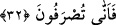

32. İşte sizin gerçek rabbiniz Allah budur. Gerçekten sonra sapıklıktan başka ne
var? Öyle ise (gerçekten) nasıl çevriliyorsunuz?
“İşte sizin” bütün bunları yapan “gerçek” Hak, yâni O’na koştuğunuz ortaklar değil
O’nun rubûbiyyeti sâbit olan “rabbiniz Allah budur.”
“Gerçekten sonra” bu ifâde istiâre yolu ile “gerçeğin dışında” demektir. Hiç
kimsenin tercih etmeyeceği “sapıklıktan başka ne var?” Bu sapıklık ise putlara
tapınmadır. Bu tapınma, hâricî organlarla yapılan bir amel olduğu halde görüş ve inanç
sapıklığına dayandığı için sapıklık adı verilmiştir.
“Öyle ise” gerçekten “nasıl çevriliyorsunuz?” Bu ifâde, bir şeyin meydana
gelmesini red, uzak görme ve bu harekete hayret etme mânâsında bir istifhâm-ı
inkârîdir: “Nasıl olur da tevhidden ve Allah’a kulluk etmekten, dosdoğru yoldan sapmak
demek olan ortak koşma ve putlara tapmaya çevrilirsiniz?” demektir.
Sa‘dî der ki:
Ey bedevî, korkarım ki Kâbe’ye erişemezsin
Çünkü gittiğin bu yol Türkistan’a çıkar
Böylece Cenab-ı Hak, Rasûlü (s.a.)’in dilinden onların sapıklığına dikkat çekmiştir. O
doğru ve hak yola ileten; tasdik ve şüphe ehlini birbirinden ayırandır.
Sâib şöyle der:
Yolu kaybedenler ilâhî sırlara vâkıf olamadılar
Ta ki yolcular bir yol göstericiye ulaşmadıkça
33. Böylece Rabb’inin, yoldan çıkanlar için söylediği “Onlar inanmazlar.” sözü
gerçekleşmiş oldu.
“Böylece” yani nasıl ki rablık Allah hakkında gerçek olduğu gibi “Rabb’inin yoldan
çıkanlar”; yani inkârlarında inâd edip hallerini düzeltme imkânı kalmayanlar “için
söylediği “Onlar inanmazlar” sözü” hüküm ve kazâsı “gerçekleşmiş oldu.” İlâhî azap
vâcip oldu. Şu halde onları azâba küfür sürükledi. Çünkü her netice sebeplere,
mukaddimelere bağlıdır.
Ne buğday başağı çıkar soğandan